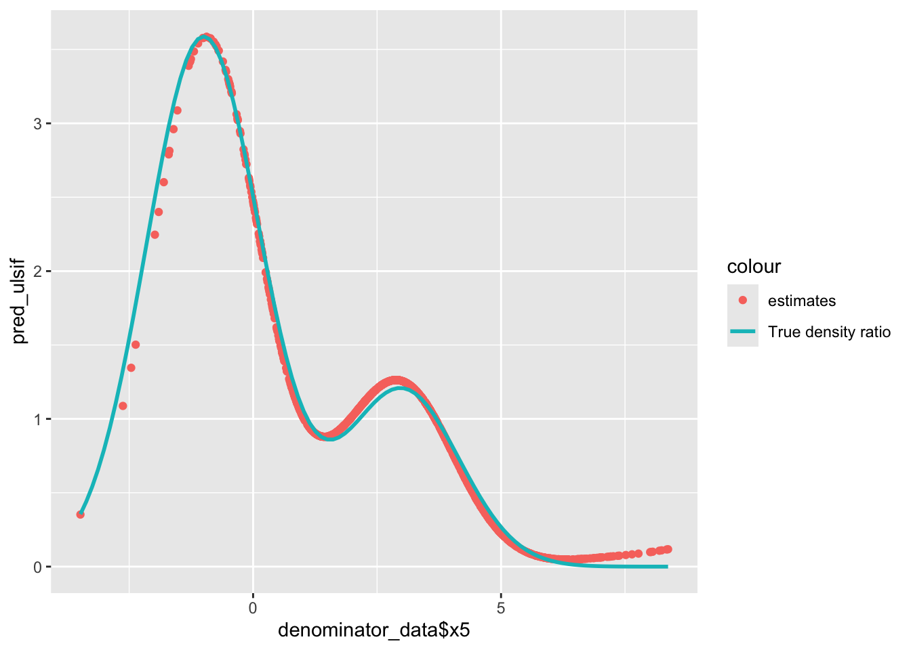
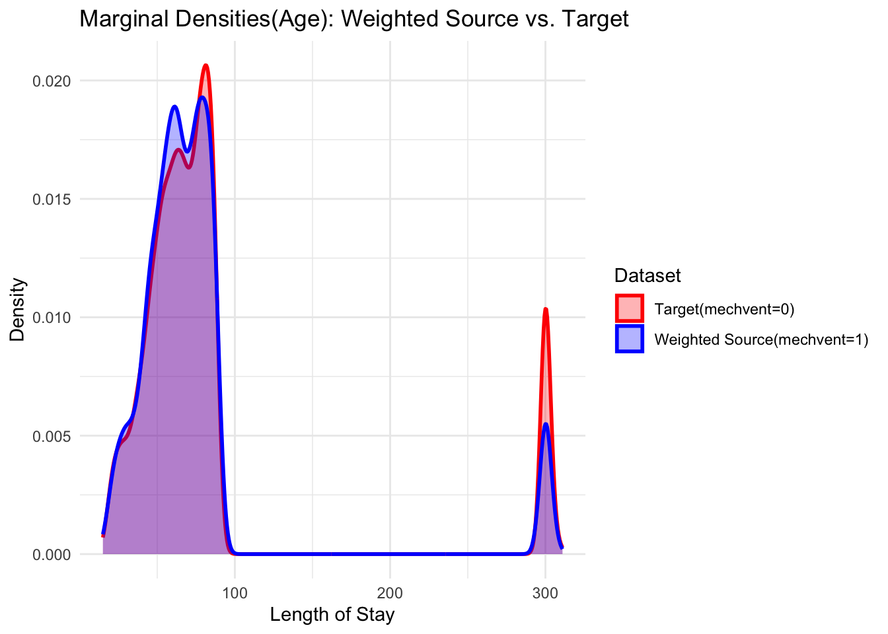
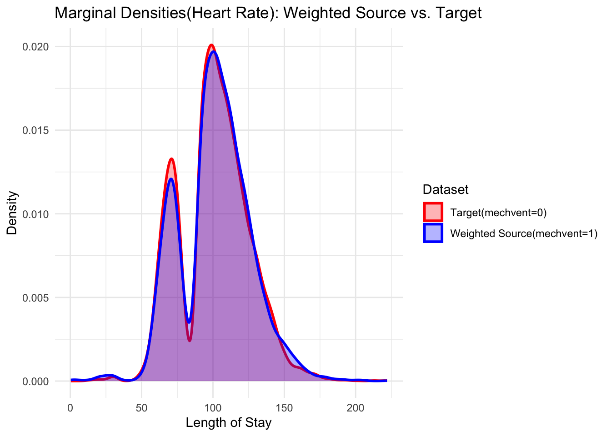

Least Square Method
Theoretical Background
Intuition:
ERM \(E_{(X,Y)\sim \mathbb{P}^{(0)}}[l(\hat{h}(X), Y)] \leq min E_{(X,Y)\sim \mathbb{P}^{(1)}}[w(X)l(h(X), Y)] + O_{\mathbb{P}}(1) + 2CE_{X\sim \hat{\mathbb{P}^{(1)}}}|\hat{w}(X) - w(X)|\)
Goal: find \(\hat{w}(X)\) that minimizes the cost of weight estimation term \(2CE_{X\sim \hat{\mathbb{P}^{(1)}}}|\hat{w}(X) - w(X)|\)
Estimator:
Formulate our goal into:
\(min_{\alpha \in R^b} \frac{1}{2} \alpha^{T} \hat{H}\alpha - \hat{h}^{T} \alpha + \lambda 1_{b}^{T} \alpha\)
\(s.t. \alpha \geq 0_{b}\) in constrained case
By Kanamori et al. (2009), unconstrained method performed better than the constrained version in practice; there is a kernelized version w/ ridge penalty term as well.
Implementation
We first implement how densityratio package illustrate
their density estimation methods using built in toy example:
# To install 'densityratio' package, we need libraries:
library(osqp)
library(pbapply)
library(RcppProgress)
#install.packages('densityratio', repos = 'https://thomvolker.r-universe.dev')
library(densityratio)## Warning: package 'densityratio' was built under R version 4.4.2head(numerator_data)## # A tibble: 6 × 5
## x1 x2 x3 x4 x5
## <fct> <fct> <dbl> <dbl> <dbl>
## 1 A G1 -0.0299 0.967 -1.26
## 2 C G1 2.29 -0.475 2.40
## 3 A G1 1.37 0.577 -0.172
## 4 B G2 1.44 -0.193 -0.708
## 5 A G1 1.01 2.23 2.01
## 6 C G2 1.83 0.762 3.71fit_ulsif <- ulsif(
df_numerator = numerator_data$x5,
df_denominator = denominator_data$x5
)
summary(fit_ulsif)##
## Call:
## ulsif(df_numerator = numerator_data$x5, df_denominator = denominator_data$x5)
##
## Kernel Information:
## Kernel type: Gaussian with L2 norm distances
## Number of kernels: 200
##
## Optimal sigma: 0.4926679
## Optimal lambda: 0.078476
## Optimal kernel weights: num [1:201] 0.204215 0.002072 -0.005423 -0.000126 0.004255 ...
##
## Pearson divergence between P(nu) and P(de): 0.2823
## For a two-sample homogeneity test, use 'summary(x, test = TRUE)'.# Predict estimated density ratio
pred_ulsif <- predict(fit_ulsif, newdata = denominator_data$x5)
summary(pred_ulsif)## Min. 1st Qu. Median Mean 3rd Qu. Max.
## 0.04821 0.47326 0.97651 0.98397 1.21468 3.58471# Function of true density ratio
dbinorm <- function(x, p, dif) {
p * dnorm(x, 0, 1) + (1 - p) * dnorm(x, dif, 1)
}
dbinorm_scaled <- function(x, scaling, ...) {
dbinorm(x, ...) * scaling
}
dnorm_scaled <- function(x, scaling, ...) {
dnorm(x, ...) * scaling
}
dratio_ulsif <- function(x, p, dif, mu, sd) {
dbinorm(x, p, dif) / dnorm(x, mu, sd)
}library(ggplot2)
ggplot() +
geom_density(aes(x = numerator_data$x5, colour = "target")) +
geom_density(aes(x = denominator_data$x5, colour = "source"))
ggplot() +
geom_density(aes(x = numerator_data$x5, color = "target")) +
geom_density(aes(x = denominator_data$x5, weight = as.numeric(pred_ulsif), color = "weighted source"))ggplot() +
geom_point(aes(x = denominator_data$x5, y = pred_ulsif, col = "estimates")) +
stat_function(mapping = aes(col = "True density ratio"),
fun = dratio_ulsif,
args = list(p = 0.4, dif = 3, mu = 3, sd = 2),
linewidth = 1)
Here we can see the R package include built-in data:
numerator_data, denominator_data containing
categorical and numerical covariates.
summary(numerator_data)## x1 x2 x3 x4 x5
## A:351 G1:479 Min. :-2.48086 Min. :-2.5217 Min. :-3.1154
## B:339 G2:521 1st Qu.:-0.07656 1st Qu.:-0.4122 1st Qu.: 0.2801
## C:310 Median : 0.59427 Median : 0.2261 Median : 2.0378
## Mean : 0.60300 Mean : 0.2395 Mean : 1.7486
## 3rd Qu.: 1.28973 3rd Qu.: 0.8779 3rd Qu.: 3.2017
## Max. : 3.82854 Max. : 3.1983 Max. : 5.7656summary(denominator_data)## x1 x2 x3 x4 x5
## A:252 G1:486 Min. :-3.7930 Min. :-2.4593 Min. :-3.483
## B:232 G2:514 1st Qu.:-0.7724 1st Qu.: 0.2639 1st Qu.: 1.563
## C:516 Median : 0.1076 Median : 0.9766 Median : 3.101
## Mean : 0.1492 Mean : 0.9718 Mean : 3.042
## 3rd Qu.: 1.0571 3rd Qu.: 1.6476 3rd Qu.: 4.460
## Max. : 4.8322 Max. : 4.2598 Max. : 8.369fit_all <- ulsif(
df_numerator = numerator_data,
df_denominator = denominator_data
)
res <- summary(fit_all, test = TRUE, parallel = TRUE)Least square method has constrained and unconstrained versions, and
Kanamori
et al, 2019 indicates the unconstrained tends to perform better(more
stable estimation under certain condition). That’s why the method is
named ulsif here: unconstrained Least Sqaure Importance
Fitting. But if we want our weights to be positive for reasons like
plotting weighted source densities, we can truncated the alpha as below
to make sure the estimated weights are stricktly positive.
## truncated alpha to prevent negative weights, but unconstrained performs better
# alpha_raw <- fit_ulsif$alpha # vector of alpha coefficients
# alpha_trunc <- pmax(alpha_raw, 0)
# fit_ulsif$alpha <- alpha_truncMIMIC-III Data Example
dat <- read.csv("./data/data_forSDE.csv")
library(tidyr)
library(dplyr)##
## Attaching package: 'dplyr'## The following objects are masked from 'package:stats':
##
## filter, lag## The following objects are masked from 'package:base':
##
## intersect, setdiff, setequal, union# univariate data
source_data1 <- dat %>%
filter(mechvent == 1, los<150) %>%
dplyr::select(los) %>%
drop_na()
target_data1 <- dat %>%
filter(mechvent == 0,los<150) %>%
dplyr::select(los) %>%
drop_na()
# multivariate data
source_data3 <- dat %>%
filter(mechvent == 1,los<150) %>%
dplyr::select(los, heartrate, age) %>%
drop_na()
target_data3 <- dat %>%
filter(mechvent == 0,los<150) %>%
dplyr::select(los, heartrate, age) %>%
drop_na()
fit_ulsif1 <- ulsif(
df_numerator = target_data1,
df_denominator = source_data1,
sigma = 0.1
)
fit_ulsif3 <- ulsif(
df_numerator = target_data3,
df_denominator = source_data3,
sigma = 0.5
)
pred1 <- predict(fit_ulsif1, newdata = source_data1)
pred3 <- predict(fit_ulsif3, newdata = source_data3)Visualizations
ggplot() +
geom_density(aes(x = los, color = "Source: mechvent=1"), data = source_data1, size = 1) +
geom_density(aes(x = los, color = "Target: mechvent=0"), data = target_data1, size = 1) +
labs(title = "LOS Distribution Shift by MechVent Status", x = "Length of Stay", y = "Density") +
scale_color_manual(values = c("Source: mechvent=1" = "blue", "Target: mechvent=0" = "red")) +
theme_minimal()## Warning: Using `size` aesthetic for lines was deprecated in ggplot2 3.4.0.
## ℹ Please use `linewidth` instead.
## This warning is displayed once every 8 hours.
## Call `lifecycle::last_lifecycle_warnings()` to see where this warning was
## generated.
ggplot() +
geom_density(aes(x = los, weight = pred1, color = "Weighted Source (mechvent=1)"), data = source_data1, size = 1) +
geom_density(aes(x = los, color = "Target (mechvent=0)"), data = target_data1, size = 1) +
scale_color_manual(values = c("Weighted Source (mechvent=1)" = "blue", "Target (mechvent=0)" = "red")) +
labs(title = "LOS: Weighted Source vs. Target (MechVent)", x = "Length of Stay", y = "Density") +
theme_minimal()Using multivariate data, the weights estimated by Least Square method make marginal weighted densities (e.g., los, age, heartrate) closely match the target distribution. However, the PCA plots still looks messy. (You can compare these plots with Separate Density Estimation.) The possible reason could be PCA is based on covariance structure, not distribution closeness.
# Marginal densities of los
ggplot() +
geom_density(aes(x = los, color = "Target(mechvent=0)", fill = "Target(mechvent=0)"),
data = target_data3, alpha = 0.3, size = 1) +
geom_density(aes(x = los, weight = pred3, color = "Weighted Source(mechvent=1)", fill = "Weighted Source(mechvent=1)"),
data = source_data3, alpha = 0.3, size = 1) +
scale_color_manual(name = "Dataset", values = c("Weighted Source(mechvent=1)" = "blue", "Target(mechvent=0)" = "red")) +
scale_fill_manual(name = "Dataset", values = c("Weighted Source(mechvent=1)" = "blue", "Target(mechvent=0)" = "red")) +
labs(title = "Marginal Densities(LOS): Weighted Source vs. Target",
x = "Length of Stay", y = "Density") +
theme_minimal()ggplot() +
geom_density(aes(x = age, color = "Target(mechvent=0)", fill = "Target(mechvent=0)"),
data = target_data3, alpha = 0.3, size = 1) +
geom_density(aes(x = age, weight = pred3, color = "Weighted Source(mechvent=1)", fill = "Weighted Source(mechvent=1)"),
data = source_data3, alpha = 0.3, size = 1) +
scale_color_manual(name = "Dataset", values = c("Weighted Source(mechvent=1)" = "blue", "Target(mechvent=0)" = "red")) +
scale_fill_manual(name = "Dataset", values = c("Weighted Source(mechvent=1)" = "blue", "Target(mechvent=0)" = "red")) +
labs(title = "Marginal Densities(Age): Weighted Source vs. Target",
x = "Length of Stay", y = "Density") +
theme_minimal()
ggplot() +
geom_density(aes(x = heartrate, color = "Target(mechvent=0)", fill = "Target(mechvent=0)"),
data = target_data3, alpha = 0.3, size = 1) +
geom_density(aes(x = heartrate, weight = pred3, color = "Weighted Source(mechvent=1)", fill = "Weighted Source(mechvent=1)"),
data = source_data3, alpha = 0.3, size = 1) +
scale_color_manual(name = "Dataset", values = c("Weighted Source(mechvent=1)" = "blue", "Target(mechvent=0)" = "red")) +
scale_fill_manual(name = "Dataset", values = c("Weighted Source(mechvent=1)" = "blue", "Target(mechvent=0)" = "red")) +
labs(title = "Marginal Densities(Heart Rate): Weighted Source vs. Target",
x = "Length of Stay", y = "Density") +
theme_minimal()
# Reduce dimension w/ PCA
# For the source data, include the weight; for target, set weight = 1.
source_data3 <- source_data3 %>% mutate(dataset = "source", weight = pred3)
target_data3 <- target_data3 %>% mutate(dataset = "target", weight = 1)
combined_data3 <- bind_rows(source_data3, target_data3)
# Run PCA on the three variables: age, los, and heartrate.
pca_res <- prcomp(combined_data3[, c("age", "los", "heartrate")], scale. = TRUE)
combined_data3 <- combined_data3 %>%
mutate(PC1 = pca_res$x[,1],
PC2 = pca_res$x[,2])
# Plot density contours for the target distribution.
ggplot() +
geom_density_2d(data = combined_data3 %>% filter(dataset == "target"),
aes(x = PC1, y = PC2, color = "Target(mechvent=0)"), linetype = "solid", size = 1) +
# Overlay a weighted density estimate for the source.
stat_density_2d(data = combined_data3 %>% filter(dataset == "source"),
aes(x = PC1, y = PC2, weight = weight, color = "Weighted Source(mechvent=1)"),
geom = "density_2d", linetype = "dashed", size = 1) +
labs(title = "PCA of Multivariate Data: Weighted Source vs. Target",
x = "PC1", y = "PC2") +
theme_minimal()## Warning in stat_density_2d(data = combined_data3 %>% filter(dataset ==
## "source"), : Ignoring unknown aesthetics: weight## Warning: The following aesthetics were dropped during statistical transformation:
## weight.
## ℹ This can happen when ggplot fails to infer the correct grouping structure in
## the data.
## ℹ Did you forget to specify a `group` aesthetic or to convert a numerical
## variable into a factor?Maximum mean discrepancy (MMD), a method measures the distance between two distributions by comparing the mean embeddings of their samples in a Reproducing Kernel Hilbert Space (RKHS), can be useful in measuring how does the weighting process perform.
Highlights
- Least Square Importance Fitting is implemented in
densityratioR package. This package also includes Kernel Mean Matching, and KL Importance Estimation. Kanamori et all, 2009 proved the Least Square method(unconstrained version) is stable and the fastest among the methods.